Generalized additive models
Introduction
Generalized additive models (GAMs) provide a flexible method for describing a non-linear relationship between predictors and a response variable. Like generalized linear models, GAMs can be extended to include random effects to represent grouped data.
Contents
This class will present the following topics:
smoothing splines, which are the basic components of a GAM;
how to fit additive models and verify their fit;
how to represent interactions between a numerical variable and a factor, or between two numerical variables, in an additive model;
the use of generalized additive models for binary or count data;
the use of additive mixed models for grouped data.
Smoothing splines
Smoothing splines are formed by combining simple functions to approximate complex non-linear functional shapes.
Example
The airquality dataset included with R presents the air ozone concentration measured in New York City daily for five months, as a function of solar radiation, wind speed and temperature.
data(airquality)
str(airquality)## 'data.frame': 153 obs. of 6 variables:
## $ Ozone : int 41 36 12 18 NA 28 23 19 8 NA ...
## $ Solar.R: int 190 118 149 313 NA NA 299 99 19 194 ...
## $ Wind : num 7.4 8 12.6 11.5 14.3 14.9 8.6 13.8 20.1 8.6 ...
## $ Temp : int 67 72 74 62 56 66 65 59 61 69 ...
## $ Month : int 5 5 5 5 5 5 5 5 5 5 ...
## $ Day : int 1 2 3 4 5 6 7 8 9 10 ...First notice that ozone concentration has a non-linear relationship with temperature.
aq_temp0 <- ggplot(airquality, aes(x = Temp, y = Ozone)) +
geom_point()
aq_temp0
Such a relationship can be modelled in a linear regression framework with a polynomial, thus including not only the predictor \(x\), but also \(x^2\), \(x^3\), etc. in the regression. A disadvantage of this approach is that a polynomial of high degree (e.g. greater than 2) rarely produces a good fit for all values of the predictor.
For example, here is the fit of polynomials of degree 1 to 4 for our example of ozone concentration as a function of temperature. The degree 4 polynomial seems to fit well up to a temperature of about 90 degrees F, where the curve decreases due to the shape of the polynomial, although this is not necessarily a realistic effect here.
aq_temp1 <- aq_temp0 + geom_smooth(method = "lm") + labs(title = "y ~ x")
aq_temp2 <- aq_temp0 + geom_smooth(method = "lm", formula = y ~ poly(x, 2)) +
labs(title = "y ~ poly(x, 2)")
aq_temp3 <- aq_temp0 + geom_smooth(method = "lm", formula = y ~ poly(x, 3)) +
labs(title = "y ~ poly(x, 3)")
aq_temp4 <- aq_temp0 + geom_smooth(method = "lm", formula = y ~ poly(x, 4)) +
labs(title = "y ~ poly(x, 4)")
plot_grid(aq_temp1, aq_temp2, aq_temp3, aq_temp4)## `geom_smooth()` using formula 'y ~ x'
Mathematical form of an additive model
In a linear regression, the response \(y\) follows a normal distribution:
\[y \sim N(\mu, \sigma^2)\]
where the mean is a linear function of the predictors.
\[\mu = \beta_0 + \beta_1 x_1 + \beta_2 x_2 + ...\]
In an additive model, \(y\) still follows a normal distribution, but its mean is not constrained to vary linearly with each predictor. Instead, the effect of each predictor is represented by a non-linear function \(f(x_i)\).
\[\mu = \beta_0 + f(x_1) + f(x_2) + ...\]
In this type of model, the \(f(x_i)\) comes from a class of functions called smoothing splines, which we will describe mathematically below.
Additive model with one predictor
The gam function of the mgcv package is used to fit additive models. In the example below, we specify a model where the ozone concentration is related to the temperature by a spline s(Temp).
library(mgcv)
o3_t <- gam(Ozone ~ s(Temp), data = airquality)The plot function applied to the result of gam displays the estimated curve with a 95% confidence interval. We choose to display the residuals (residuals = TRUE) with open points (symbol pch = 1).
plot(o3_t, residuals = TRUE, pch = 1)
Choice of basis functions
A smoothing spline is a linear combination of basis functions \(b\) with weights \(\beta\) estimated from the data. In the equation below, \(k\) represents the number of basis functions used to form the spline.
\[f(x_i) = \sum_{j=1}^k \beta_j b_j(x_i)\]
By default, gam uses thin plate regression splines as basis functions, but other types of functions can be specified with the bs argument. The graph below shows the shape of these thin plate splines for values of \(k\) ranging from 3 to 9. Notice that the number of basis functions and their complexity increases with \(k\), so that more and more complex splines can be produced.
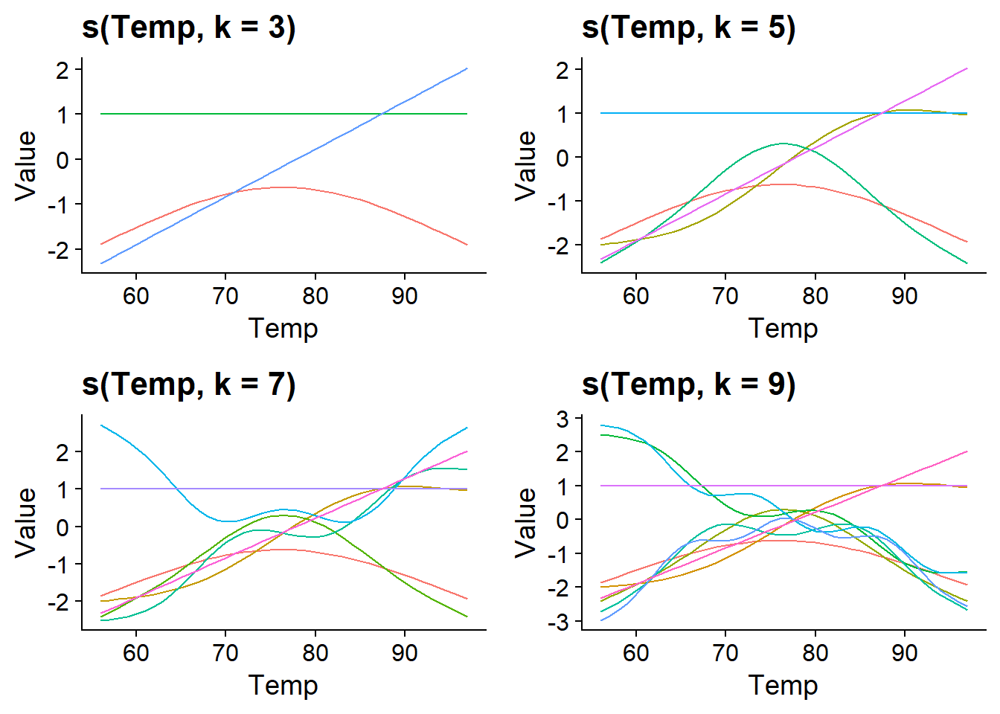
We can set the number of basis functions with the k argument of the s() function.
If we do not specify \(k\), the gam function defaults to k = 10. In our example, the curve estimated with k = 3 is simpler, but those estimated with k = 5 and k = 7 seem equivalent, showing that 5 basic functions are sufficient for this problem.
par(mfrow = c(1, 3), cex = 1)
plot(gam(Ozone ~ s(Temp, k = 3), data = airquality), residuals = TRUE, main = "k = 3")
plot(gam(Ozone ~ s(Temp, k = 5), data = airquality), residuals = TRUE, main = "k = 5")
plot(gam(Ozone ~ s(Temp, k = 7), data = airquality), residuals = TRUE, main = "k = 7")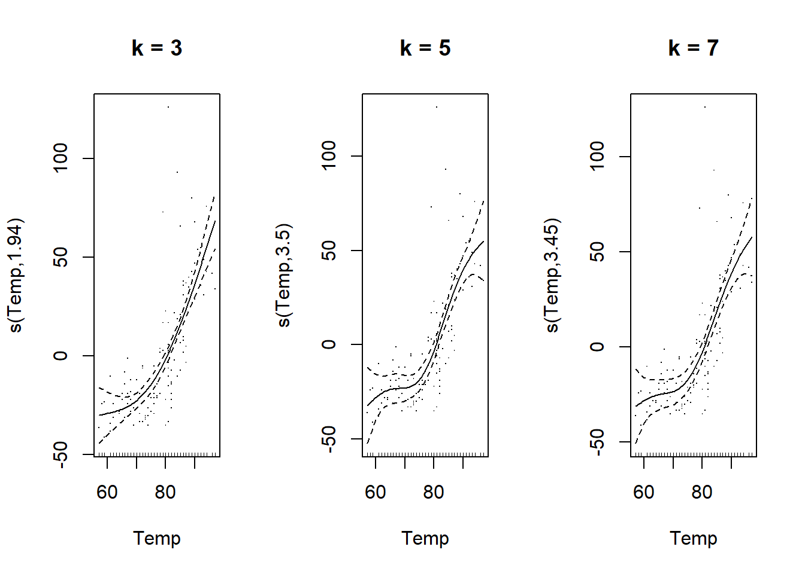
Smoothing parameter
In practice, it is not optimal to control the complexity of the curve by varying k. It is preferable to choose a larger k than necessary, to ensure that the number of basis functions is not the “limiting factor” for fitting the model. However, this causes a risk of overfitting if we have, for example, 10 adjustable parameters for each predictor in the model.
To avoid overfitting, the spline parameters \(f(x_i)\) are estimated by maximizing a modified version of the log-likelihood \(l\), adding a penalty proportional to the “roughness” of the spline, measured by its second derivative.
\[2l - \sum_i \lambda_i \int f''(x_i)^2 dx_i\]
The square of the second derivative of \(f(x_i)\), \(f''(x_i)^2\), takes a higher value at points where the spline changes direction rapidly. The integral in the equation below therefore calculates the average “roughness” of the spline. The importance of this penalty is proportional to a smoothing parameter \(\lambda_i\) chosen separately for each spline composing the model.
As shown below, the higher \(\lambda_i\) is, the smoother the resulting curve is (close to a straight line). This parameter therefore controls the trade-off between a close fit to the data and a simple shape of the curve.
par(mfrow = c(1, 3), cex = 1)
plot(gam(Ozone ~ s(Temp, sp = 0.001), data = airquality), residuals = TRUE, main = "sp = 0.001")
plot(gam(Ozone ~ s(Temp, sp = 0.1), data = airquality), residuals = TRUE, main = "sp = 0.1")
plot(gam(Ozone ~ s(Temp, sp = 10), data = airquality), residuals = TRUE, main = "sp = 10")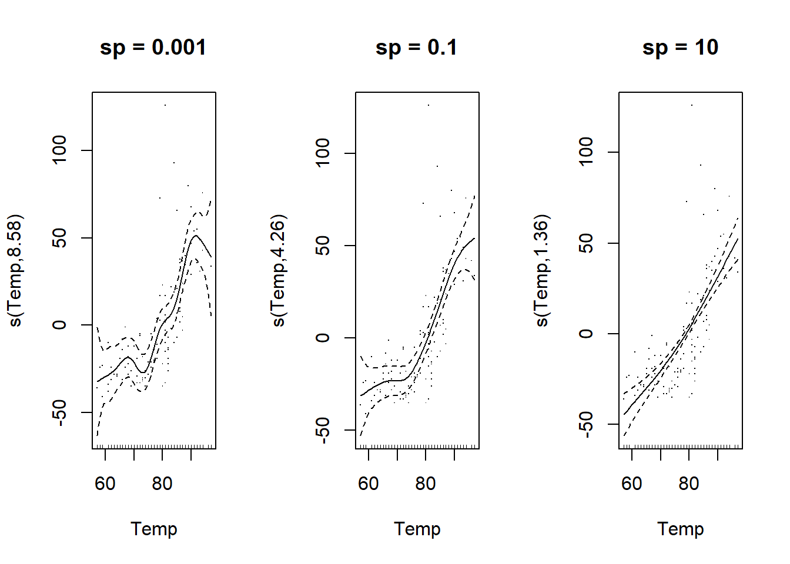
The choice of an optimal value of \(\lambda\) is made by one of the algorithms implemented by the gam function. Today, the restricted maximum likelihood (method = "REML") is the most recommended algorithm.
o3_t <- gam(Ozone ~ s(Temp), data = airquality, method = "REML")REML was also the algorithm used to estimate the variance of random effects in a mixed model. There is in fact a link between random effects and additive models. Without going into mathematical details here, note that just as the random effect makes a trade-off between an effect estimated independently for each group and a common effect across all groups, the spline makes a trade-off between a straight line and an irregular function that would pass through all points.
Why an additive model?
Additive models have the advantage of offering a lot of flexibility in the representation of the relationship between predictors and response variables. Nevertheless, the fact that the response is an additive function makes it possible to isolate the effect of each of these predictors. In this sense, GAMs are more easily interpretable than other very flexible models (such as random forests).
On the other hand, as the spline does not have a simple parametric equation, only a visualization of the function makes it possible to understand the estimated effects. Also, since we estimate \(k\) parameters per predictor, GAMs require a significant amount of computing time for complex models.
Fitting additive models
The following model includes splines for the three predictors (temperature, wind speed and solar radiation).
mod_o3 <- gam(Ozone ~ s(Temp) + s(Wind) + s(Solar.R),
data = airquality, method = "REML")Note: If the effects of all predictors are represented by splines in this example, we can also combine smoothing splines s() for some predictors and linear effects for others in a GAM.
The plot command now produces a graph for each estimated spline. The splines are estimated with a mean of zero. Thus:
the intercept of the model represents the mean value of the response;
the effects represented by each spline represent the variation of the response around this mean as a function of the value of the predictor.
par(mfrow = c(1, 3), cex = 1)
plot(mod_o3, residuals = TRUE)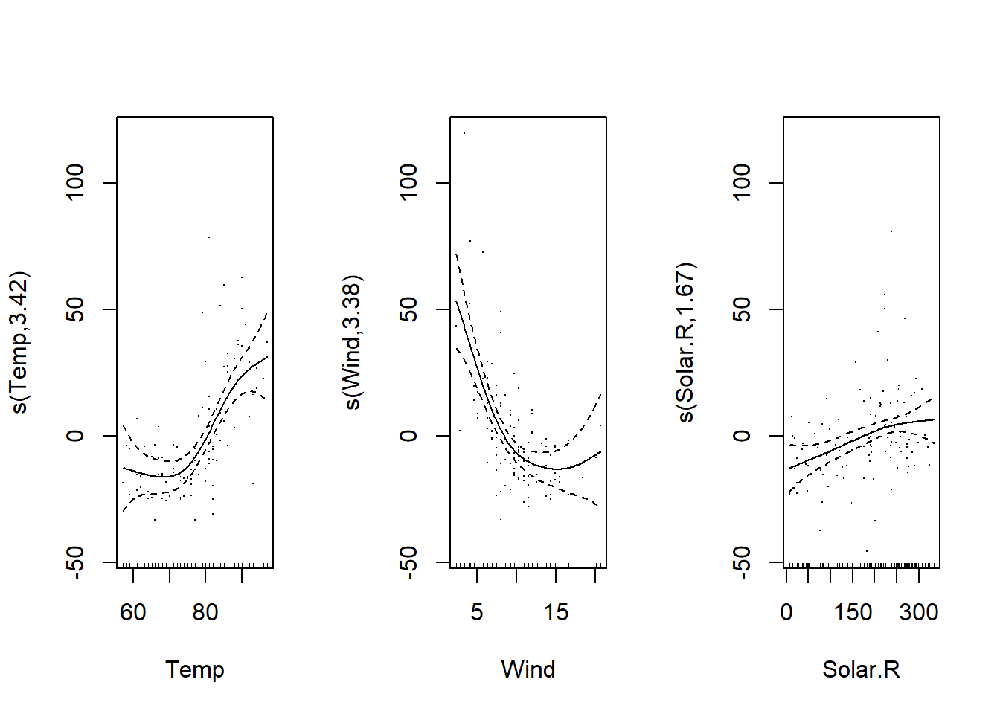
We can also perform a translation of each spline equal to the intercept (shift = coef(mod_o3)[1]); in this case, the graphs show the mean of the response as a function of the predictor, rather than a difference from its mean. This version may be easier to interpret.
par(mfrow = c(1, 3), cex = 1)
plot(mod_o3, shift = coef(mod_o3)[1], seWithMean = TRUE, residuals = TRUE)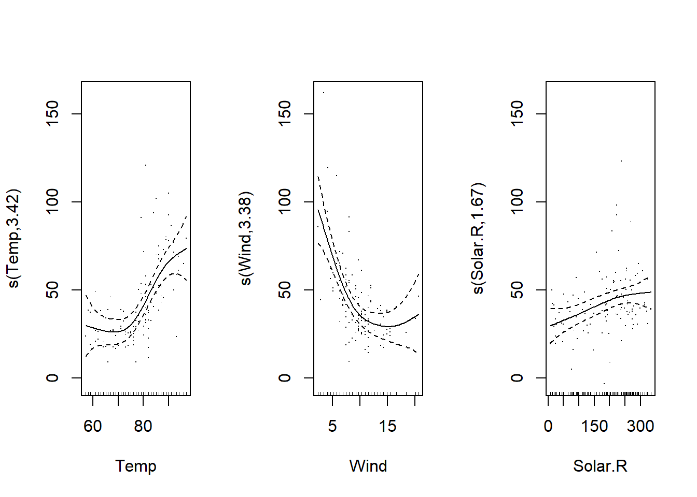
Also, the argument seWithMean = TRUE includes the uncertainty on the mean response (the intercept) in the confidence interval of the splines. Comparing the two graphs, this has the effect of slightly widening the interval, especially in the middle of the graph.
We can consult the coefficients of the model with the function `coef’: these include the intercept and 9 coefficients for each spline.
coef(mod_o3)## (Intercept) s(Temp).1 s(Temp).2 s(Temp).3 s(Temp).4 s(Temp).5
## 42.09909910 -12.08591563 8.40378528 -0.43034237 0.63812808 -0.05397508
## s(Temp).6 s(Temp).7 s(Temp).8 s(Temp).9 s(Wind).1 s(Wind).2
## -0.64836948 -0.47596943 -3.94323347 2.55758901 -6.32106628 -5.34319449
## s(Wind).3 s(Wind).4 s(Wind).5 s(Wind).6 s(Wind).7 s(Wind).8
## 2.43199369 5.31801099 1.28624165 -5.40270159 -0.55172226 -32.22412238
## s(Wind).9 s(Solar.R).1 s(Solar.R).2 s(Solar.R).3 s(Solar.R).4 s(Solar.R).5
## -13.15942337 1.93993397 -0.74784376 0.28873326 -0.45574360 0.25027309
## s(Solar.R).6 s(Solar.R).7 s(Solar.R).8 s(Solar.R).9
## 0.62997910 0.01586162 2.86340308 4.00836972The smoothing parameter for each spline is contained in the sp element of the result.
mod_o3$sp## s(Temp) s(Wind) s(Solar.R)
## 0.2236120 0.2258963 4.5972792Diagnosis of fit
The gam.check function produces the diagnostic graphs of the model, as well as the results of a goodness of fit test, which we will discuss below.
par(mfrow = c(2, 2))
gam.check(mod_o3)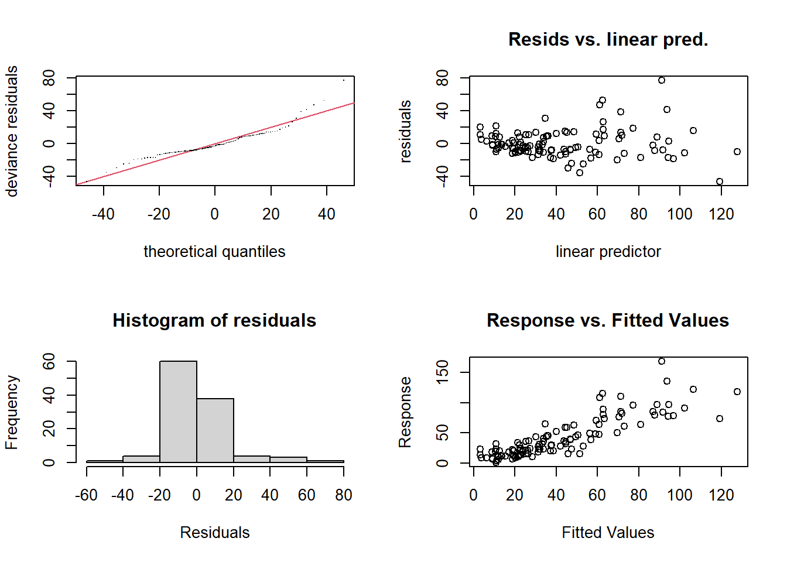
##
## Method: REML Optimizer: outer newton
## full convergence after 5 iterations.
## Gradient range [-8.990922e-05,0.0003184666]
## (score 473.6277 & scale 312.3537).
## Hessian positive definite, eigenvalue range [0.03296797,53.55641].
## Model rank = 28 / 28
##
## Basis dimension (k) checking results. Low p-value (k-index<1) may
## indicate that k is too low, especially if edf is close to k'.
##
## k' edf k-index p-value
## s(Temp) 9.00 3.42 0.77 <2e-16 ***
## s(Wind) 9.00 3.38 1.04 0.58
## s(Solar.R) 9.00 1.67 0.94 0.26
## ---
## Signif. codes: 0 '***' 0.001 '**' 0.01 '*' 0.05 '.' 0.1 ' ' 1As with a linear model, the plot of residuals vs. predicted values (top right) should not show a trend, the variance of the residuals should be homogeneous, and the quantile-quantile plot should approach a straight line (normalization of the residuals). Here we observe some extreme values on the right side of the distribution. In addition, the variance of the residuals seems to increase with the predicted value.
The results of the printed test Basis dimension (k) checking results indicate the number of effective degrees of freedom of the model (edf) with respect to the value chosen for \(k\). The effective degrees of freedom estimate the “complexity” of the spline: for example, the relationship between solar radiation and ozone concentration is between a straight line (degree 1) and a quadratic curve (degree 2), while the other two splines have a degree between 3 and 4.
The \(p\)-value in the last column is intended to detect a non-random distribution of residuals. In general, a significant value can mean that the model underfits the data, especially if edf is close to the number of basis functions \(k\). In this case, it is useful to repeat the fit by increasing \(k\).
Here, edf is well below \(k\), so the poor fit may be due to the non-homogeneous variance of the residuals noticed on the diagnostic graphs.
By applying a logarithmic transformation to the ozone concentration, the fit is improved, even if the variance is not quite homogeneous; the transformation seems to have “overcompensated” by producing more extreme values on the left.
mod_lo3 <- gam(log(Ozone) ~ s(Temp) + s(Wind) + s(Solar.R),
data = airquality, method = "REML")
par(mfrow = c(2, 2))
gam.check(mod_lo3)
##
## Method: REML Optimizer: outer newton
## full convergence after 5 iterations.
## Gradient range [-4.834294e-06,3.917609e-05]
## (score 86.02355 & scale 0.2337533).
## Hessian positive definite, eigenvalue range [0.05712074,53.52062].
## Model rank = 28 / 28
##
## Basis dimension (k) checking results. Low p-value (k-index<1) may
## indicate that k is too low, especially if edf is close to k'.
##
## k' edf k-index p-value
## s(Temp) 9.00 1.95 0.96 0.365
## s(Wind) 9.00 2.46 0.86 0.055 .
## s(Solar.R) 9.00 2.16 1.01 0.535
## ---
## Signif. codes: 0 '***' 0.001 '**' 0.01 '*' 0.05 '.' 0.1 ' ' 1Here are the results from the model of log(Ozone). Note that the number of effective degrees of freedom is indicated on each \(y\)-axis (e.g.: s(Temp, 1.95)).
par(mfrow = c(1, 3))
plot(mod_lo3, residuals = TRUE)
As with other model types, the summary command displays a summary of the fit. The first lines indicate that this is a model with a normal (`gaussian’) distribution of residuals and no link function. This is followed by estimates of the model’s parametric terms, here only the intercept, and then a table of the significance of each spline. Briefly, a spline is significant if we cannot draw a horizontal line within its confidence interval, which would represent the absence of effect of the predictor.
summary(mod_lo3)##
## Family: gaussian
## Link function: identity
##
## Formula:
## log(Ozone) ~ s(Temp) + s(Wind) + s(Solar.R)
##
## Parametric coefficients:
## Estimate Std. Error t value Pr(>|t|)
## (Intercept) 3.41593 0.04589 74.44 <2e-16 ***
## ---
## Signif. codes: 0 '***' 0.001 '**' 0.01 '*' 0.05 '.' 0.1 ' ' 1
##
## Approximate significance of smooth terms:
## edf Ref.df F p-value
## s(Temp) 1.953 2.450 21.106 < 2e-16 ***
## s(Wind) 2.462 3.121 6.470 0.00042 ***
## s(Solar.R) 2.158 2.719 9.679 3.43e-05 ***
## ---
## Signif. codes: 0 '***' 0.001 '**' 0.01 '*' 0.05 '.' 0.1 ' ' 1
##
## R-sq.(adj) = 0.688 Deviance explained = 70.7%
## -REML = 86.024 Scale est. = 0.23375 n = 111Finally, the model explains about 69% of the variance of the response according to the adjusted \(R^2\). The explained deviance is a pseudo-\(R^2\) that can be used instead of the \(R^2\) when it is a generalized additive model.
Concurvity
In multiple linear regression, collinearity between predictors (the correlation between one predictor and a combination of the others) could limit our ability to estimate the effect of each predictor separately. For an additive model, concurvity measures a similar problem; due to spline fitting, even non-linear correlation can lead to confounding the effects of two predictors.
concurvity(mod_lo3)## para s(Temp) s(Wind) s(Solar.R)
## worst 2.213704e-24 0.5929964 0.5600026 0.3969107
## observed 2.213704e-24 0.4607831 0.3684667 0.2880898
## estimate 2.213704e-24 0.4507423 0.2971714 0.2507011The concurvity function gives several estimates of concurvity for each predictor. This is analogous to the \(R^2\) of the model predicting one predictor from the others; thus, a value >0.9 would be equivalent to a VIF > 10 for the collinearity of a linear model.
Here, the concurvity is less than 0.6 in the worst case, so there is no reason to omit a predictor. Note that the highest correlation is between temperature and wind speed, as we can see on the graph below.
ggplot(airquality, aes(x = Temp, y = Wind)) +
geom_point()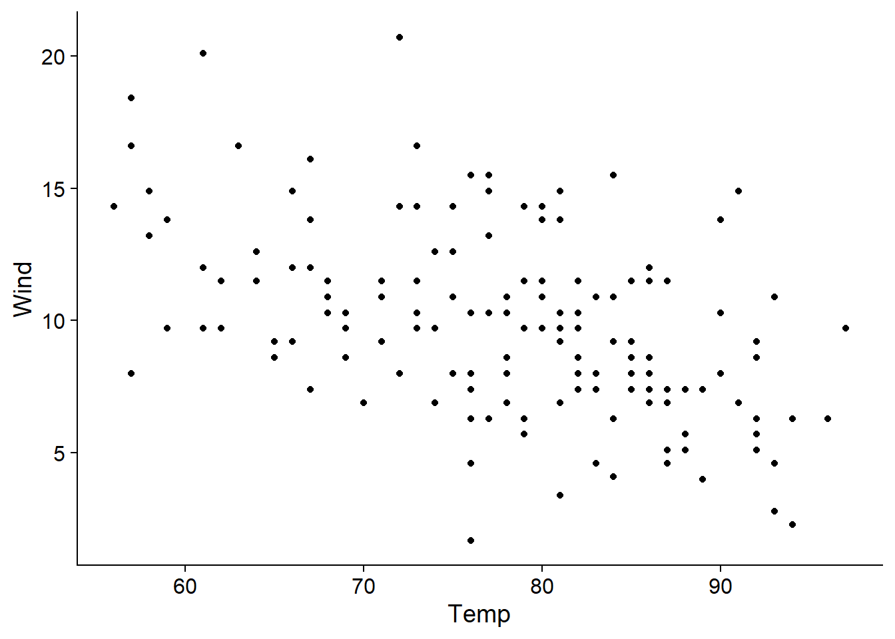
Modelling interactions
In this section, we will begin to model the interaction between a non-linear effect and a factor (categorical variable), or between two non-linear effects.
We will use the CanWeather dataset from the gamair package, which contains temperature (T) measurements for each day (time) of a year for 35 Canadian cities (place). The latitude of each city is included and these cities are grouped into four regions (Arctic, Atlantic, Continental and Pacific).
library(gamair)
data(canWeather)
str(CanWeather)## 'data.frame': 12775 obs. of 5 variables:
## $ time : num 1 2 3 4 5 6 7 8 9 10 ...
## $ T : num -3.6 -3.1 -3.4 -4.4 -2.9 -4.5 -5.5 -3.1 -4 -5 ...
## $ region : Factor w/ 4 levels "Arctic","Atlantic",..: 2 2 2 2 2 2 2 2 2 2 ...
## $ latitude: num 47.3 47.3 47.3 47.3 47.3 ...
## $ place : Factor w/ 35 levels "Arvida","Bagottville",..: 24 24 24 24 24 24 24 24 24 24 ...The following graph shows the observed temperature curve for each city, color-coded as a function of latitude.
ggplot(CanWeather, aes(x = time, y = T, color = latitude, group = place)) +
geom_line(alpha = 0.5)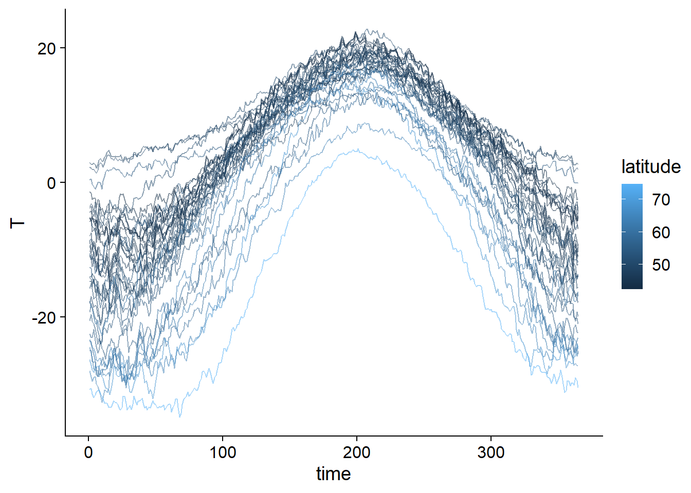
We first fit a model without interaction, where the temperature is predicted by the sum of a non-linear function of the day of the year and a constant effect of the region.
mod_t <- gam(T ~ s(time, k = 20) + region, data = CanWeather, method = "REML")Notes:
Categorical variables should be coded as factors. Unlike other functions like
lm,gamdoes not automatically convert text variables into factors.Here we chose
k = 20fors(time)after getting an underfit result with the default value of \(k\).
To represent both splines and parametric coefficients, we need to specify all.terms = TRUE in plot. The argument pages = 1 tells the function to combine the graphs into a single multi-panel graph.
plot(mod_t, all.terms = TRUE, pages = 1, shift = coef(mod_t)[1])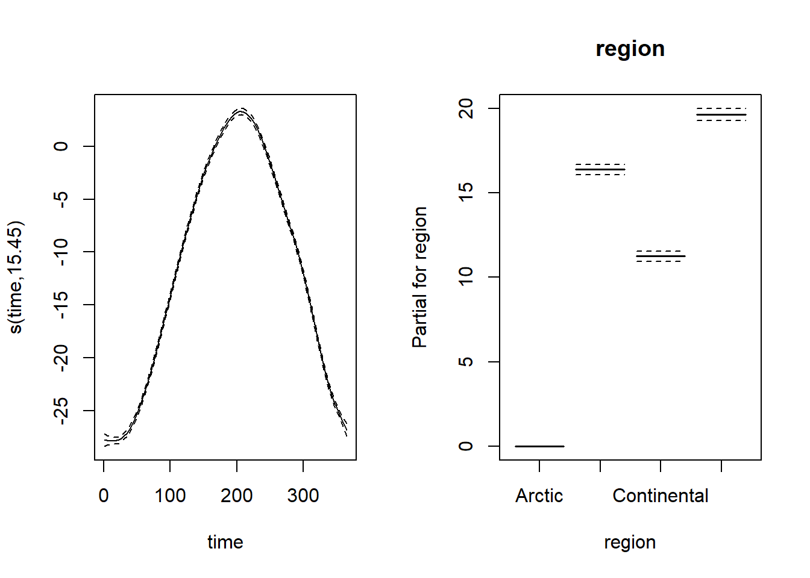
Note that the confidence intervals for both spline and regional effects are very narrow, due to the large amount of data. Here, the intercept represents the mean temperature for the Arctic region. Since we used the shift argument, the spline shown here represents the prediction of the temperature for each day of the year in the Arctic. For the other regions, the prediction would be equal to this same spline shifted upwards according to the regional coefficient shown in the graph on the right.
Here is a summary of the results of this model:
summary(mod_t)##
## Family: gaussian
## Link function: identity
##
## Formula:
## T ~ s(time, k = 20) + region
##
## Parametric coefficients:
## Estimate Std. Error t value Pr(>|t|)
## (Intercept) -11.8037 0.1389 -85.00 <2e-16 ***
## regionAtlantic 16.3814 0.1521 107.69 <2e-16 ***
## regionContinental 11.2448 0.1552 72.43 <2e-16 ***
## regionPacific 19.6375 0.1756 111.80 <2e-16 ***
## ---
## Signif. codes: 0 '***' 0.001 '**' 0.01 '*' 0.05 '.' 0.1 ' ' 1
##
## Approximate significance of smooth terms:
## edf Ref.df F p-value
## s(time) 15.45 17.55 4029 <2e-16 ***
## ---
## Signif. codes: 0 '***' 0.001 '**' 0.01 '*' 0.05 '.' 0.1 ' ' 1
##
## R-sq.(adj) = 0.871 Deviance explained = 87.2%
## -REML = 37642 Scale est. = 21.114 n = 12775Here are the diagnostic graphs:
par(mfrow = c(2, 2))
gam.check(mod_t)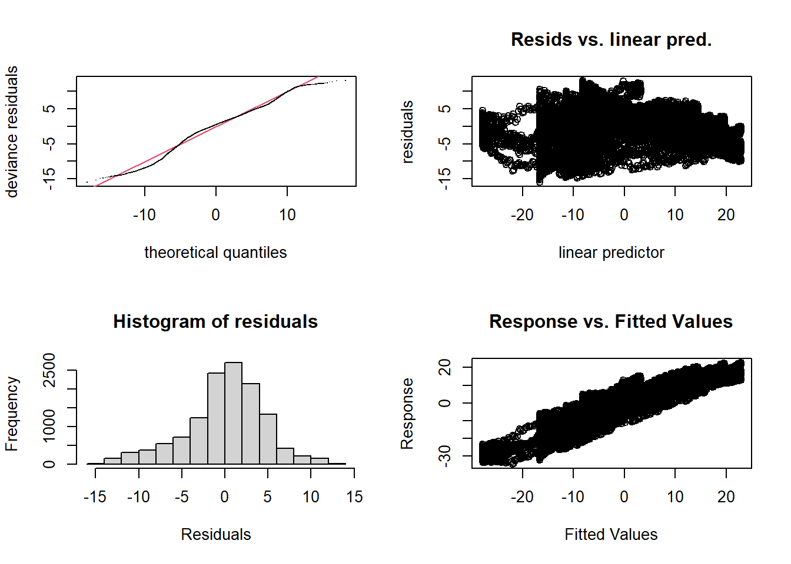
##
## Method: REML Optimizer: outer newton
## full convergence after 8 iterations.
## Gradient range [-5.649263e-05,5.186556e-05]
## (score 37641.65 & scale 21.11364).
## Hessian positive definite, eigenvalue range [7.735162,6385.008].
## Model rank = 23 / 23
##
## Basis dimension (k) checking results. Low p-value (k-index<1) may
## indicate that k is too low, especially if edf is close to k'.
##
## k' edf k-index p-value
## s(time) 19.0 15.5 1.02 0.90Even if there is not too strong a trend in the residuals, we know that the temperature variation during the year is not the same for each region (e.g. seasonal variations of \(T\) are smaller on the Pacific coast than in the middle of the continent). The following model attempts to reproduce this effect.
Interaction between a spline and a factor
In the model below, s(time, by = region) means that a spline of \(T\) as a function of time must be estimated separately for each of the four regions. It is therefore an interaction between the region and the day of the year. Since each spline has a mean of 0, the separate term + region must still be included to represent the differences in mean temperature between the regions.
We have also replaced the gam function by bam: it uses a different algorithm to save memory and computation time when we have a complex model with a large dataset. However, it is less efficient than gam for a small dataset.
mod_t_by <- bam(T ~ s(time, k = 20, by = region) + region,
data = CanWeather, method = "REML")The resulting splines show the difference in annual temperature variability by region. Remember that except for the Arctic region, the constant region effect (last graph) must be added to each curve to obtain the temperature predictions for this region.
plot(mod_t_by, pages = 1, all.terms = TRUE, shift = coef(mod_t_by)[1])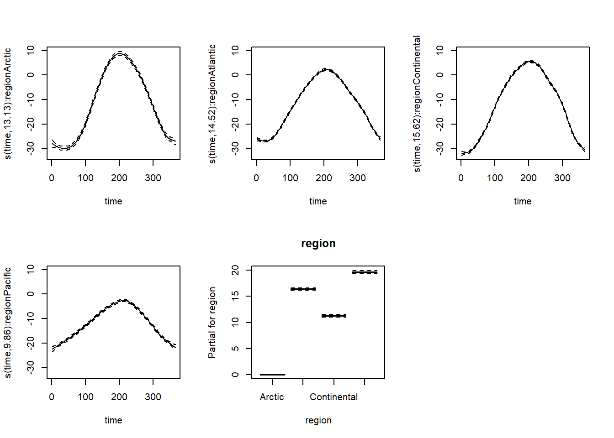
The resulting model now explains 91% of the variation in \(T\).
summary(mod_t_by)##
## Family: gaussian
## Link function: identity
##
## Formula:
## T ~ s(time, k = 20, by = region) + region
##
## Parametric coefficients:
## Estimate Std. Error t value Pr(>|t|)
## (Intercept) -11.8353 0.1149 -103.0 <2e-16 ***
## regionAtlantic 16.3862 0.1258 130.2 <2e-16 ***
## regionContinental 11.2358 0.1284 87.5 <2e-16 ***
## regionPacific 19.6500 0.1453 135.3 <2e-16 ***
## ---
## Signif. codes: 0 '***' 0.001 '**' 0.01 '*' 0.05 '.' 0.1 ' ' 1
##
## Approximate significance of smooth terms:
## edf Ref.df F p-value
## s(time):regionArctic 13.13 15.57 962.1 <2e-16 ***
## s(time):regionAtlantic 14.52 16.82 2264.6 <2e-16 ***
## s(time):regionContinental 15.62 17.67 2896.4 <2e-16 ***
## s(time):regionPacific 9.86 12.08 418.0 <2e-16 ***
## ---
## Signif. codes: 0 '***' 0.001 '**' 0.01 '*' 0.05 '.' 0.1 ' ' 1
##
## R-sq.(adj) = 0.912 Deviance explained = 91.2%
## -REML = 35279 Scale est. = 14.441 n = 12775There is another type of interaction between a spline and a factor, called a factor-smooth interaction (fs). In this case, gam estimates a separate spline for each level of the factor, but the splines must have the same smoothing parameter. Each of the splines can also have a mean different from 0, so there is no need to add a separate region effect.
mod_t_fs <- bam(T ~ s(time, region, bs = "fs"), data = CanWeather, method = "REML")
plot(mod_t_fs, shift = coef(mod_t_fs)[1])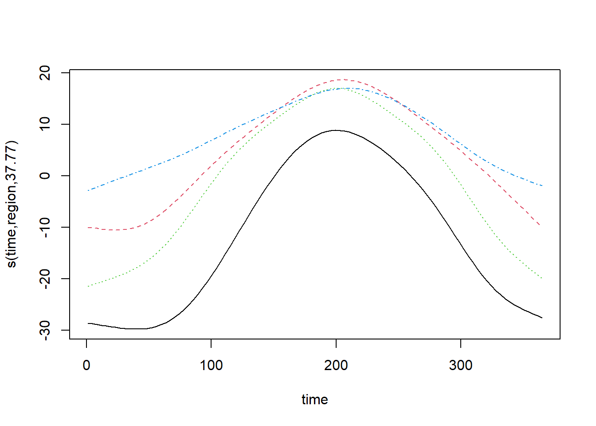
For this type of interaction, the plot command displays all splines on the same graph. Unfortunately, it is not easy to display a legend to associate each spline with a factor value.
The use of bs = "fs" versus by = ... is especially recommended when the factor has several levels and there may not be enough data per level to estimate each smoothing parameter independently. Here, the results are about the same due to the large amount of data and the version with by, which is a bit more flexible, gets a better AIC.
AIC(mod_t)## [1] 75238.21AIC(mod_t_by)## [1] 70424.59AIC(mod_t_fs)## [1] 70453.95Interaction between numerical variables
Now suppose that we want to model how the temperature versus time curve varies with latitude. The function te (tensor product) defines a spline in several dimensions, where the smoothing parameter is chosen separately for each dimension.
mod_t_lat <- bam(T ~ te(time, latitude) + region, data = CanWeather, method = "REML")Note: You can also define a multi-dimensional spline with s(x1, x2), in which case the same smoothing parameter is used for both dimensions. This version is mainly used in cases where both variables are expressed in the same units, such as X and Y coordinates in spatial data modeling.
For a 2D spline, plot represents contours with a margin of error (1 standard deviation on either side).
plot(mod_t_lat)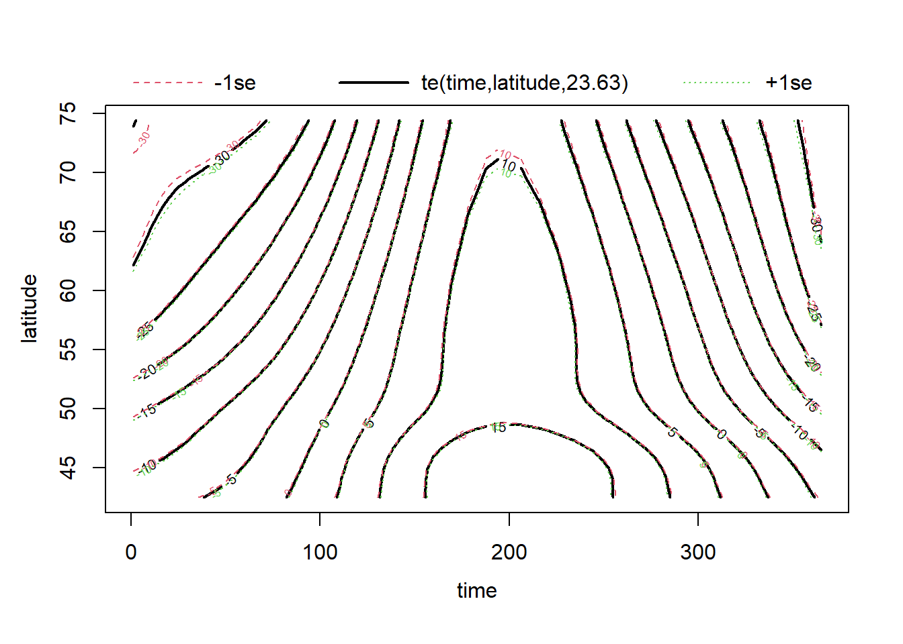
Other visualization options are possible by changing the scheme argument. For example, scheme = 2 adds colors representing the response variable (a heatmap).
plot(mod_t_lat, scheme = 2)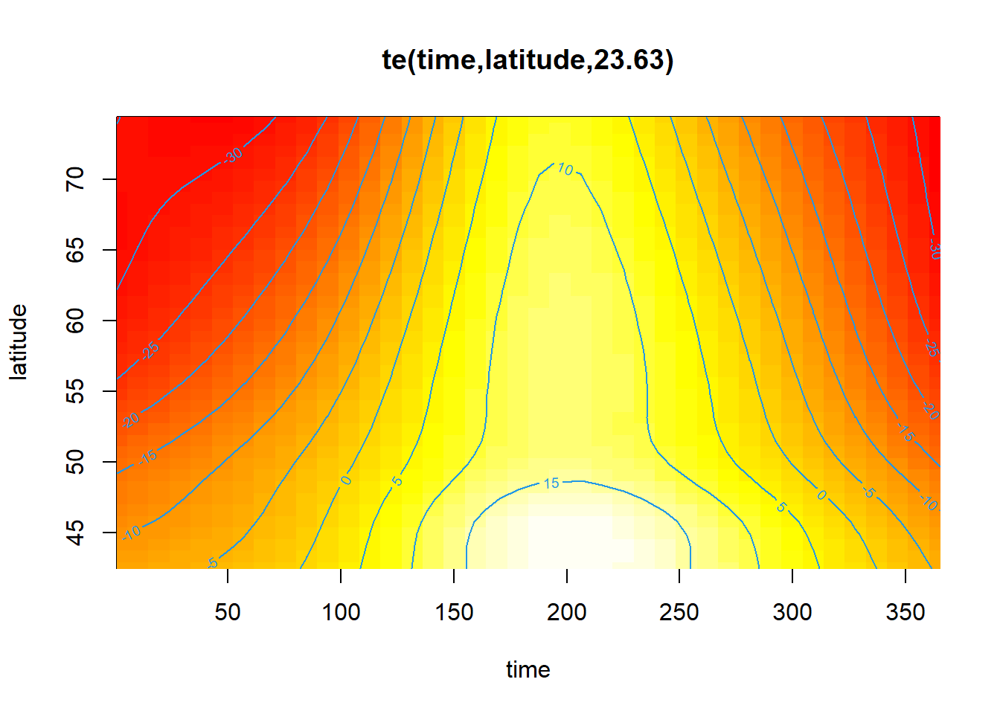
The model’s diagnostics suggest underfitting. However, even if edf approaches \(k\), increasing the value of \(k\) takes a lot of computational time without really fixing the problem. In fact, the misfit could be due to the fact that the relationship between temperature and latitude varies by region. (Vancouver is more “northern” in latitude than Rouyn-Noranda!)
par(mfrow = c(2, 2))
gam.check(mod_t_lat)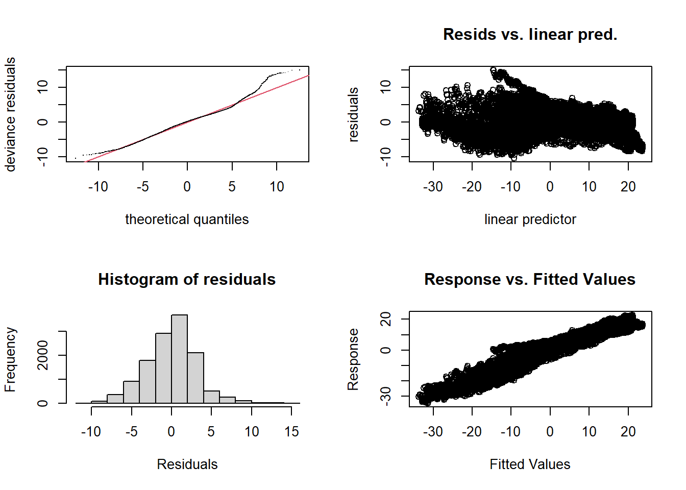
##
## Method: REML Optimizer: outer newton
## full convergence after 7 iterations.
## Gradient range [-0.001258148,0.001141736]
## (score 33013.51 & scale 10.17519).
## Hessian positive definite, eigenvalue range [3.181735,6384.01].
## Model rank = 28 / 28
##
## Basis dimension (k) checking results. Low p-value (k-index<1) may
## indicate that k is too low, especially if edf is close to k'.
##
## k' edf k-index p-value
## te(time,latitude) 24.0 23.6 0.22 <2e-16 ***
## ---
## Signif. codes: 0 '***' 0.001 '**' 0.01 '*' 0.05 '.' 0.1 ' ' 1Summary: Interactions
y ~ s(x, by = z) + z: Independent spline fit of \(y\) vs. \(x\) for each level of the \(z\) factor.y ~ s(x, z, bs = "fs"): Fitting a spline of \(y\) vs. \(x\) for each level of factor \(z\), with a common smoothing parameter.y ~ s(x1, x2): Two-dimensional spline with single smoothing parameter.y ~ te(x1, x2): Two-dimensional spline with different smoothing parameter in each dimension.
Generalized additive models
Like linear models, additive models can be generalized by modifying the distribution of the response (e.g., binomial, Poisson) and linking the additive predictor to the mean response by a link function \(g\).
\[g(\mu) = \beta_0 + f(x_1) + f(x_2) + ...\]
Example
To illustrate this type of model, we will use the Wells dataset from the carData package, which presents data from a survey of 3020 households in Bangladesh. The wells used by these households had arsenic concentrations (arsenic variable, in multiples of \(100 per g/L\)) above the safe level. The binary response switch indicates whether the household changed wells. In addition to the arsenic concentration, the table contains other predictors, including the distance to the nearest safe well (distance in meters).
library(carData)
data(Wells)
str(Wells)## 'data.frame': 3020 obs. of 5 variables:
## $ switch : Factor w/ 2 levels "no","yes": 2 2 1 2 2 2 2 2 2 2 ...
## $ arsenic : num 2.36 0.71 2.07 1.15 1.1 3.9 2.97 3.24 3.28 2.52 ...
## $ distance : num 16.8 47.3 21 21.5 40.9 ...
## $ education : int 0 0 10 12 14 9 4 10 0 0 ...
## $ association: Factor w/ 2 levels "no","yes": 1 1 1 1 2 2 2 1 2 2 ...As in the case of a GLM, we represent a binary response by a binomial distribution with a logit link. The following model thus represents non-linear and additive effects of arsenic concentration and distance on \(\text{logit}(p) = \log \frac{p}{1-p}\), where \(p\) is the probability of changing wells.
mod_wells <- gam(switch ~ s(arsenic) + s(distance), data = Wells,
family = binomial, method = "REML")The summary of results indicates significant effects of both predictors, even though the pseudo-\(R^2\) (% of deviance explained) is very small, indicating that these factors explain only a small part of the variability in individual decisions.
summary(mod_wells)##
## Family: binomial
## Link function: logit
##
## Formula:
## switch ~ s(arsenic) + s(distance)
##
## Parametric coefficients:
## Estimate Std. Error z value Pr(>|z|)
## (Intercept) 0.32521 0.03834 8.482 <2e-16 ***
## ---
## Signif. codes: 0 '***' 0.001 '**' 0.01 '*' 0.05 '.' 0.1 ' ' 1
##
## Approximate significance of smooth terms:
## edf Ref.df Chi.sq p-value
## s(arsenic) 4.345 5.356 161.60 <2e-16 ***
## s(distance) 2.172 2.790 86.61 <2e-16 ***
## ---
## Signif. codes: 0 '***' 0.001 '**' 0.01 '*' 0.05 '.' 0.1 ' ' 1
##
## R-sq.(adj) = 0.0699 Deviance explained = 5.41%
## -REML = 1961.4 Scale est. = 1 n = 3020The graphs produced with plot show the effect of the predictors on the scale of the link function (the logit of \(p\)). We will see later how to visualize the predictions for \(p\).
plot(mod_wells, pages = 1)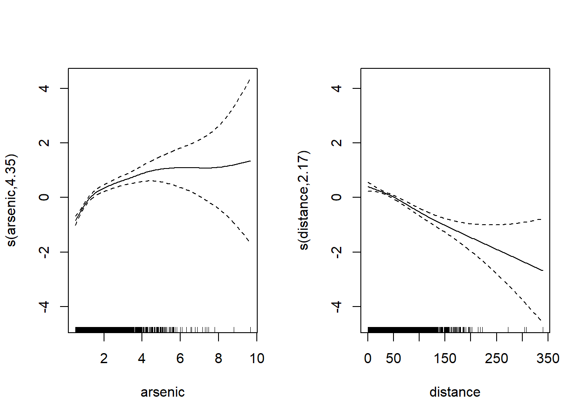
Note that spline uncertainty increases significantly for large arsenic and distance values due to the lack of data at these predictor levels. The vertical bars at the bottom of the graph (called rug plot) show the position of the observations on the scale of each predictor. These observations become rare for arsenic > 6 and distance > 200.
Diagnostics
The usual diagnostic graphs are less useful for a binary response, because the residuals are always in two groups: negative residuals if the response was 1, positive residuals if it was 0.
par(mfrow = c(2, 2))
gam.check(mod_wells)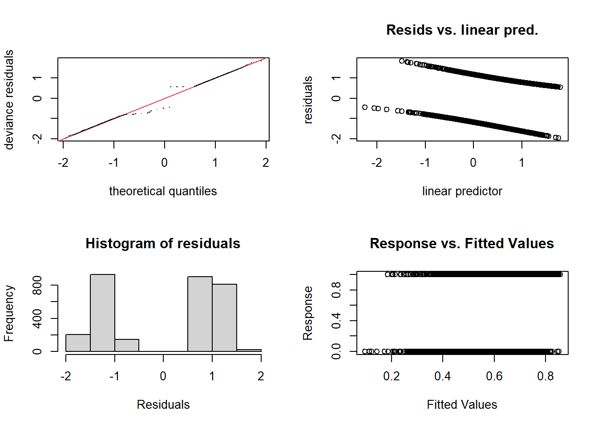
##
## Method: REML Optimizer: outer newton
## full convergence after 4 iterations.
## Gradient range [-0.001839484,-5.380839e-05]
## (score 1961.362 & scale 1).
## Hessian positive definite, eigenvalue range [0.03238313,1.045585].
## Model rank = 19 / 19
##
## Basis dimension (k) checking results. Low p-value (k-index<1) may
## indicate that k is too low, especially if edf is close to k'.
##
## k' edf k-index p-value
## s(arsenic) 9.00 4.35 1.01 0.66
## s(distance) 9.00 2.17 0.97 0.08 .
## ---
## Signif. codes: 0 '***' 0.001 '**' 0.01 '*' 0.05 '.' 0.1 ' ' 1In this case, it is preferable to evaluate the fit of the model by grouping the residuals. The binnedplot function of the arm package orders the observations in ascending order of predicted values, then groups observations with similar predictions. It then produces a graph of the mean residual per group as a function of the mean prediction, with a 95% prediction interval.
library(arm)
binnedplot(fitted(mod_wells), residuals(mod_wells, type = "response"))
For example, if a group of households had a mean prediction of 60% and 55% of them changed wells, the residual is -0.05. Here we do not see a trend among the grouped residuals and 94% of them (48/51) are within the 95% prediction interval.
Visualizing the effects with predict
Because of the shape of the logit link, the additive effects on the logit scale are no longer additive on the scale of the predicted probability \(p\). In this case, to visualize the effects of the predictors on \(p\), it is preferable to create a grid of values and apply the predict function. Here is an overview of the method to follow:
Create a dataset with different combinations of predictor values.
Calculate for each row of this dataset the model predictions and their standard errors on the logit scale (
type = "link", the default option inpredict).Compute the 95% confidence interval on the logit scale, i.e. \(\pm 1.96\) standard errors on either side of the mean prediction, then bring back the mean predictions and intervals on the scale of \(p\) with
plogis.
Note: The distribution of estimates is closer to a normal distribution on the logit scale, rather than on the scale of \(p\). This is why the intervals must be computed before transforming, rather than computing the interval with the results of predict(... type = response).
# Create the prediction grid
pred_df <- expand.grid(arsenic = seq(0, 8, 0.5), distance = c(25, 50, 100, 200))
# Predictions and standard errors on the logit scale
pred_se <- predict(mod_wells, pred_df, se = TRUE)
# Transform the mean and the interval limits with plogis
pred_df$pred <- plogis(pred_se$fit)
pred_df$lo <- plogis(pred_se$fit - 1.96 * pred_se$se.fit)
pred_df$hi <- plogis(pred_se$fit + 1.96 * pred_se$se.fit)The following graph illustrates the predicted effects with their confidence intervals. Note again that the uncertainty increases for high values of distance or arsenic concentration.
ggplot(pred_df, aes(x = arsenic, y = pred, ymin = lo, ymax = hi)) +
geom_ribbon(aes(fill = as.factor(distance)), alpha = 0.3) +
geom_line(aes(color = as.factor(distance))) +
scale_color_brewer(palette = "Dark2") +
scale_fill_brewer(palette = "Dark2") +
labs(y = "p(switch)", color = "distance", fill = "distance")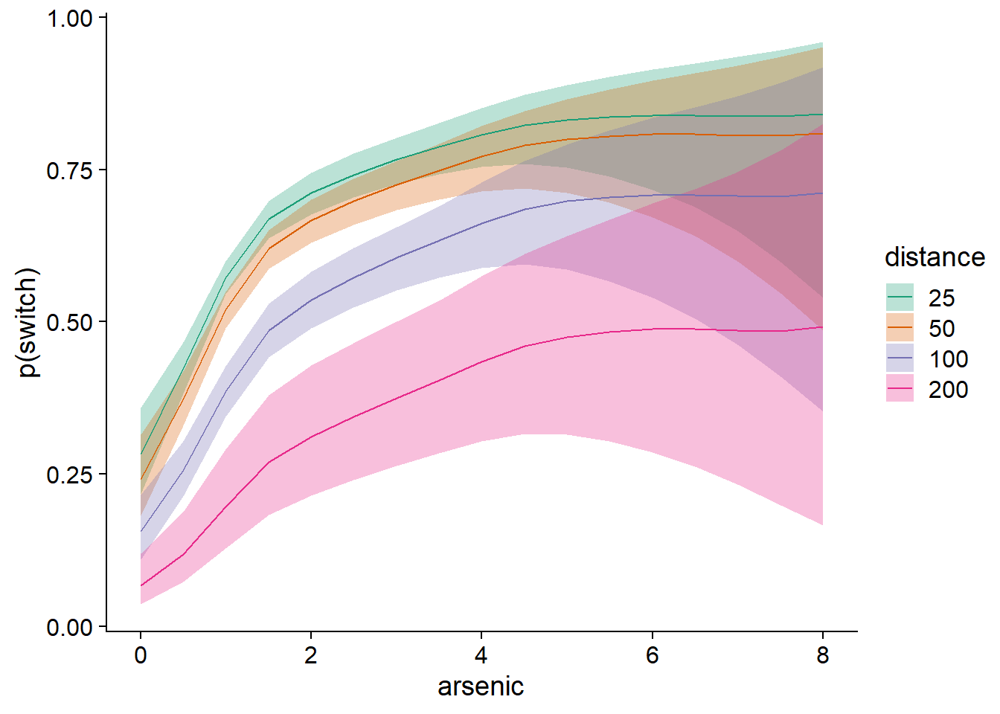
Additive mixed effects models
Finally, we will give a brief example of adding random effects to an additive model, to produce a Generalized Additive Mixed Effects Model (GAMM). For more information and examples on this topic, you can consult the excellent article by Pedersen et al. (2019) included in the references at the end of these notes.
Example
The CO2 dataset included with R presents data on the rate of CO2 absorption (uptake) by different plants as a function of the ambient CO2 concentration (conc). The plants come from two different sources (Type, Quebec or Mississippi) and have undergone one of two treatments (Treatment taking the value “chilled” or “nonchilled”).
data(CO2)
CO2$Plant <- factor(CO2$Plant)
head(CO2)## Grouped Data: uptake ~ conc | Plant
## Plant Type Treatment conc uptake
## 1 Qn1 Quebec nonchilled 95 16.0
## 2 Qn1 Quebec nonchilled 175 30.4
## 3 Qn1 Quebec nonchilled 250 34.8
## 4 Qn1 Quebec nonchilled 350 37.2
## 5 Qn1 Quebec nonchilled 500 35.3
## 6 Qn1 Quebec nonchilled 675 39.2Let’s first adjust an additive model of the (non-linear) effect of CO2 concentration on absorption, plus a constant difference between treatments. We therefore ignore for the moment the fact that repeated measurements have been made on each plant.
mod_co2 <- gam(log(uptake) ~ s(log(conc), k = 5) + Treatment,
data = CO2, method = "REML")Note:
After testing both options, the CO2 concentration and absorption were log-transformed to obtain a better normality and variance homogeneity of the residuals.
We reduce the number of basis functions to 5 because the variable conc has only 7 levels and \(k\) cannot exceed the number of distinct values of the predictor.
Here is the graph of the estimated effects for this model.
plot(mod_co2, all.terms = TRUE, pages = 1, residuals = TRUE, pch = 1,
shift = coef(mod_co2)[1], seWithMean = TRUE)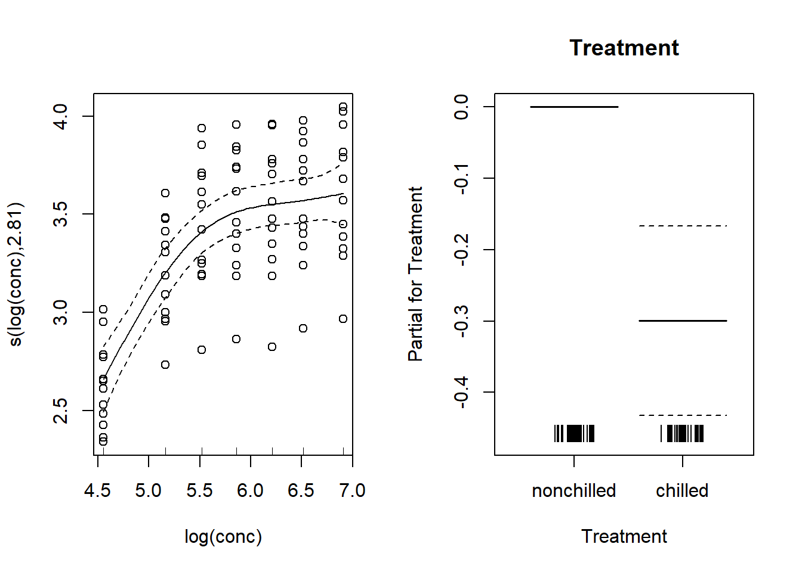
Random effects on the intercept
To include a random effect of plant identity on the intercept, we add a term s(Plant, bs = "re"). Here, “re” means random effect, so it is not a spline, but a random effect, equivalent to (1 | Plant) for the syntax used by the lme4 package. This effect shifts the absorption vs. concentration curve from one plant to another, but the shape of this curve does not change.
mod_co2_re <- gam(log(uptake) ~ s(log(conc), k = 5) + s(Plant, bs = "re") + Treatment,
data = CO2, method = "REML")Here are the graphs of the estimated effects. The random effect of the plants is shown on a quantile-quantile plot, which at the same time allows us to verify the normality of these random effects.
par(mfrow = c(1, 3))
plot(mod_co2_re, all.terms = TRUE, residuals = TRUE, pch = 1,
shift = coef(mod_co2_re)[1], seWithMean = TRUE)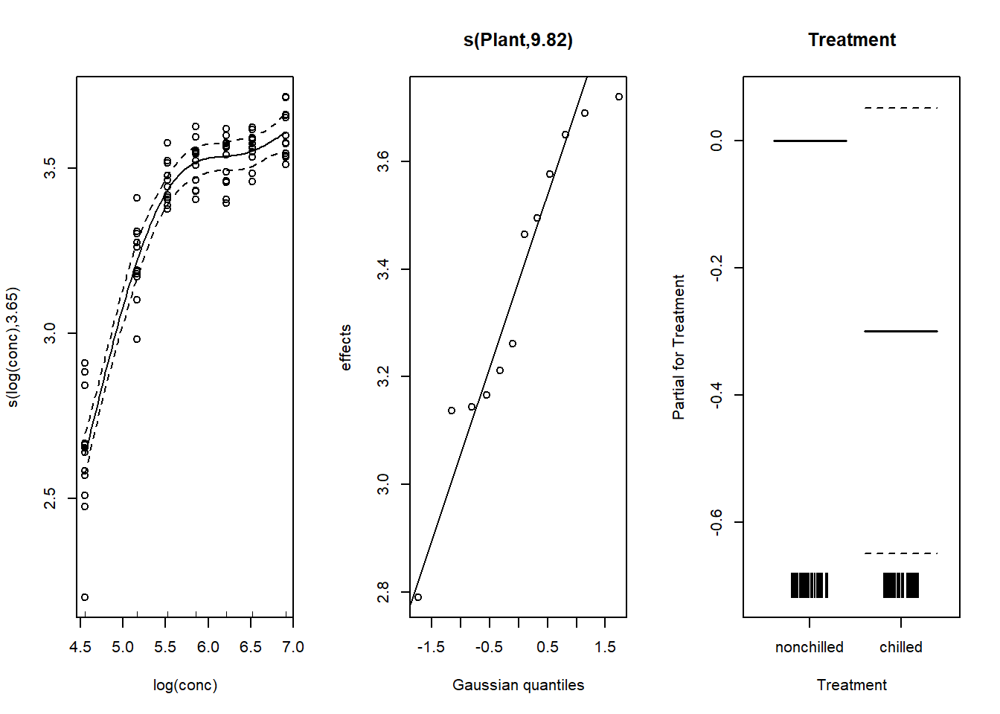
Note that the inclusion of a random effect makes it possible to more accurately estimate the absoprtion vs. concentration curve. Also, the difference between treatments is no longer significant (the confidence interval includes 0), because the treatment is constant per plant and the previous model did not take into account the non-independence of measurements taken on the same plant.
Random effects on the shape of a spline
The interaction between spline and factor (bs = "fs") is one way to model a random group effect on the shape of a spline, as shown below.
mod_co2_fs <- gam(log(uptake) ~ s(log(conc), k = 5) +
s(log(conc), Plant, k = 5, bs = "fs") +
Treatment, data = CO2, method = "REML")Here, the first spline represents the effect of conc on the “average plant”, while the second spline (with bs = "fs") represents the deviations of this spline for each plant. This second term is analogous to the random effect of a factor on a slope estimated in a linear mixed model (i.e. (1 + log(conc) | Plant).
Here is a graph of these random effects relative to the mean spline. Note that the shift argument has been omitted here, as it is easier to interpret random effects (middle graph) as deviations from the mean.
par(mfrow = c(1, 3))
plot(mod_co2_fs, all.terms = TRUE, residuals = TRUE, pch = 1)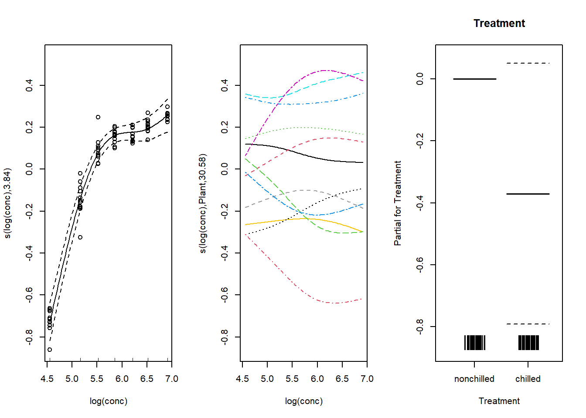
We can also use predict to visualize the estimated splines for each plant.
CO2_pred <- mutate(CO2, pred = predict(mod_co2_fs))
ggplot(CO2_pred, aes(x = log(conc), y = log(uptake), color = Plant)) +
geom_point() +
geom_line(aes(y = pred))
References
Pedersen, E.J. et al. (2019) Hierarchical generalized additive models in ecology: an introduction with mgcv. PeerJ 7:e6876.
“GAMs in R” online course by Noam Ross (https://noamross.github.io/gams-in-r-course/)